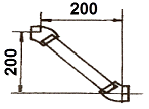
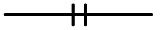
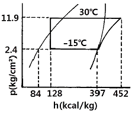
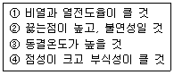
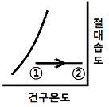

공조냉동기계기능사 (2012-04-08 기출문제)
1과목: 공조냉동안전관리
1. 냉동기의 메인 스위치를 차단하고 전기 시설을 점검하던 중 감전사고가 있었다면 어떤 전기부품 때문인가?
- 콘덴서
- 마그네트
- 릴레이
- 타이머
(정답률: 84%)

2. 작업복에 대한 설명 중 옳지 않은 것은?
- 작업복의 스타일은 착용자의 연령, 성별 등은 고려할 필요가 없다.
- 화기사용 작업자는 방염성, 불연성의 작업복을 착용한다.
- 작업복은 항상 깨끗이 하여야 한다.
- 작업복은 몸에 맞고 동작이 편하며, 상의 끝이나 바지자락 등이 기계에 말려 들어갈 위험이 없도록 한다.
(정답률: 91%)
3. 재해율 중 연천인율을 구하는 식으로 옳은 것은?
- 연천인율 = (연간 재해자수/연평균 근로자수) × 1000
- 연천인율 = (연평균근로자수/재해발생건수) × 1000
- 연천인율 = (재해발생건수/근로총시간수) × 1000
- 연천인율 = (근로총시간수/재해발생건수) × 1000
(정답률: 75%)
4. 가스용접토치가 과열되었을 때 가장 적절한 조치사항은?
- 아세틸렌가스를 멈추고 산소 가스만을 분출시킨 상태로 물속에서 냉각시킨다.
- 산소 가스를 멈추고 아세틸렌가스만을 분출시킨 상태로 물속에서 냉각시킨다.
- 아세틸렌 산소 가스를 분출시킨 상태로 물속에서 냉각시킨다.
- 아세틸렌가스만을 분출시킨 상태로 팁 클리너를 사용하여 팁을 소제하고 공기 중에서 냉각시킨다.
(정답률: 74%)
5. 보호 장구는 필요할 때 언제라도 착용할 수 있도록 청결하고 성능이 유지된 상태에서 보관되어야 한다. 보관방법으로 틀린 것은?
- 광선을 피하고 통풍이 잘되는 장소에 보관할 것
- 부식성, 유해성, 인화성 액체 등과 혼합하여 보관하지 말 것
- 모래, 진흙 등이 묻은 경우는 깨끗이 씻고 햇빛에서 말릴 것
- 발열성 물질을 보관하는 주변에 가까이 두지 말 것
(정답률: 88%)
6. 다음 중 불안전한 상태라 볼 수 없는 것은?
- 환기 불량
- 위험물의 방치
- 안전교육의 미 참여
- 기계기구의 정비 불량
(정답률: 85%)
7. 냉동 제조 설비의 안전관리자의 인원에 대한 설명 중 올바른 것은?
- 냉동능력 300톤 초과(냉매가 프레온일 경우는 600톤 초과)인 경우 안전관리원은 3명 이상이어야 한다.
- 냉동능력이 100톤 초과 300톤 이하(냉매가 프레온일 경우는 200톤 초과 600톤 이하)인 경우 안전관리원은 1명 이상이어야 한다.
- 냉동능력 50톤 초과 100톤 이하(냉매가 프레온인 경우 100톤 초과 200톤 이하)인 경우 안전 관리 총괄자는 없어도 상관없다.
- 냉동능력 50톤 이하(냉매가 프레온인 경우 100톤 이하)인 경우 안전 관리 책임자는 없어도 상관없다.
(정답률: 78%)
8. 보일러 파열사고의 원인으로 적절하지 못한 것은?
- 압력 초과
- 취급 불량
- 수위 유지
- 과열
(정답률: 88%)
9. 수공구 안전에 대한 일반적인 유의사항으로 잘못된 것은?
- 사용 전에 이상 유무를 반드시 점검한다.
- 작업에 적합한 공구가 없을 경우 대용으로 유사한 것을 사용한다.
- 수공구 사용 시에는 필요한 보호구를 착용한다.
- 수공구 사용 전에 충분한 사용법을 숙지하고 익히도록 한다.
(정답률: 92%)
10. 응축기에서 응축 액화된 냉매가 수액기로 원활히 흐르지 못하는 가장 큰 원인은?
- 액 유입관경이 크다.
- 액 유출관경이 크다.
- 안전밸브의 구경이 적다.
- 균압관의 관경이 적다.
(정답률: 79%)
11. 전기화재 발생 시 가장 좋은 소화기는?
- 산∙알카리 소화기
- 포말 소화기
- 모래
- 분말 소화기
(정답률: 74%)
12. 산소용접 중 역화현상이 일어났을 때 조치 방법으로 가장 적합한 것은?
- 아세틸렌 밸브를 즉시 닫는다.
- 토치속의 공기를 배출한다.
- 아세틸렌 압력을 높인다.
- 산소압력을 용접조건에 맞춘다.
(정답률: 87%)
13. 고압선과 저압 가공선이 병가된 경우 접촉으로 인해 발생하는 것과 변압기의 1, 2차 코일의 절연파괴로 인하여 발생하는 현상과 관계있는 것은?
- 단락
- 지락
- 혼촉
- 누전
(정답률: 78%)
14. 양중기의 종류 중 동력을 사용하여 중량물을 매달아 상하 및 좌우로 운반하는 기계장치는?
- 크레인
- 리프트
- 곤돌라
- 승강기
(정답률: 90%)
15. 사업주는 보일러의 안전한 운전을 위하여 근로자에게 보일러의 운전방법을 교육하여 안전사고를 방지하여야 한다. 다음 중 교육내용에 해당하지 않는 것은?
- 보일러의 각종 부속장치의 누설상태를 점검할 것
- 압력방출장치·압력제한스위치·화염검출기의 설치 및 정상 작동여부를 점검할 것
- 압력방출장치의 개방된 상태를 확인할 것
- 고저수위조절장치와 급수펌프와의 상호 기능상태를 점검할 것
(정답률: 78%)
2과목: 냉동기계
16. 다음 용어 설명 중 잘못된 것은?
- 냉각(cooling) : 상온보다 낮은 온도로 열을 제거하는 것
- 동결(freezing) : 냉각작용에 의해 물질을 응고점 이하까지 열을 제거하여 고체 상태로 만든 것
- 냉장(storage) : 냉각장치를 이용, 0℃ 이상의 온도에서 식품이나 공기 등을 상변화 없이 저장하는 것
- 냉방(air conditioning) : 실내공기에 열을 가하여 주위 온도보다 높게 하는 방법
(정답률: 85%)
17. 윤활유의 사용목적으로 거리가 먼 것은?
- 운동면에 윤활작용으로 마모 방지
- 기계적 효율 향상과 소손방지
- 패킹재료를 보호하여 냉각작용을 억제
- 유막형성으로 냉매가스 누설방지
(정답률: 76%)
18. 팽창밸브 선정 시 고려할 사항 중 관계없는 것은?
- 관의 두께
- 냉동기의 냉동능력
- 사용냉매의 종류
- 증발기의 형식 및 크기
(정답률: 67%)
19. 다음 그림과 같이 20A 강관을 45° 엘보에 나사 연결할 때 관의 실제소요길이는 약 얼마인가? (단, 엘보중심 길이 25mm, 나사물림 길이 13mm이다.)

- 255.8mm
- 258.8mm
- 274.8mm
- 282.8mm
(정답률: 60%)
20. 2단 압축 1단 팽창 냉동장치에 대한 설명 중 옳은 것은?
- 단단 압축시스템에서 압축비가 작을 때 사용된다.
- 냉동부하가 감소하면 중간 냉각기는 필요 없다.
- 단단 압축시스템보다 응축능력을 크게 하기 위해 사용된다.
- -30℃ 이하의 비교적 낮은 증발온도를 요하는 곳에 주로 사용된다.
(정답률: 63%)
21. 2중 효용 흡수식 냉동기에 대한 설명 중 옳지 않은 것은?
- 단중 효용 흡수식 냉동기에 비해 효율이 높다.
- 2개의 재생기가 있다.
- 2개의 증발기가 있다.
- 2개의 열교환기를 가지고 있다.
(정답률: 60%)
22. 아래와 같은 배관의 도시기호는 어느 이음인가?

- 나사식 이음
- 플랜지식 이음
- 용접식 이음
- 턱걸이식 이음
(정답률: 82%)
23. 영국의 마력 1 [HP]를 열량으로 환산할 때 맞는 것은?
- 102 [kcal/h]
- 632 [kcal/h]
- 860 [kcal/h]
- 641 [kcal/h]
(정답률: 55%)
24. 저항 3Ω과 유도 리액턴스 4Ω이 직렬로 접속된 회로의 역률은?
- 0.4
- 0.5
- 0.6
- 0.8
(정답률: 48%)
25. 동결장치 상부에 냉각코일을 집중적으로 설치하고, 공기를 유동시켜 피 냉각물체를 동결시키는 장치는?(오류 신고가 접수된 문제입니다. 반드시 정답과 해설을 확인하시기 바랍니다.)
- 송풍 동결장치
- 공기 동결장치
- 접촉 동결장치
- 브라인 동결장치
(정답률: 63%)
26. 다음은 NH3 표준냉동사이클의 P-h선도이다. 플래시 가스열량은 얼마인가?

- 44 kcal/kg
- 55 kcal/kg
- 313 kcal/kg
- 368 kcal/kg
(정답률: 60%)
27. 지열을 이용하는 열펌프(Heat Pump)의 종류가 아닌 것은?
- 엔진구동 열펌프
- 지하수 이용 열펌프
- 지표수 이용 열펌프
- 지중열 이용 열펌프
(정답률: 84%)
28. 냉동장치의 배관의 있어서 유의할 사항으로 틀린 것은?
- 관의 강도가 적합한 규격이어야 한다.
- 냉매의 종류에 따라 관의 재질을 선택해야 한다.
- 관내부의 유체 압력 손실이 커야 한다.
- 관의 온도 변화에 의한 신축을 고려해야 한다.
(정답률: 85%)
29. 제빙용으로 브라인(brine)의 냉각에 적당한 증발기는?
- 관코일 증발기
- 헤링본 증발기
- 원통형 증발기
- 평판상 증발기
(정답률: 65%)
30. 전자냉동은 어떠한 원리를 이용한 것인가?
- 제백효과
- 안티효과
- 펠티에효과
- 증발효과
(정답률: 74%)
31. 증발기의 성에부착을 제거하기 위한 제상 방법이 아닌 것은?
- 전열제상
- 핫 가스제상
- 산 살포제상
- 부동액 살포제상
(정답률: 67%)
32. 증발 온도가 낮을 때 미치는 영향 중 틀린 것은?
- 냉동능력 감소
- 소요동력 감소
- 압축비 증대로 인한 실린더 과열
- 성적 계수 저하
(정답률: 53%)
33. 온도가 다른 두 물체를 접촉시키면 열은 고온에서 저온의 물체로 이동한다. 이것은 어떤 법칙인가?
- 주울의 법칙
- 열역학 제2법칙
- 헤스의 법칙
- 열역학 제1법칙
(정답률: 66%)
34. 배관의 부식방지를 위해 사용하는 도료가 아닌 것은?
- 광명단
- 연산칼슘
- 크롬산아연
- 탄산마그네슘
(정답률: 57%)
35. 암모니아 냉매의 특성에 대한 것으로 틀린 것은?
- 동 및 동합금, 아연을 부식시킨다.
- 철 및 강을 부식시킨다.
- 물에 잘 용해되지만 윤활유에는 잘 녹지 않는다.
- 염산이나 유항의 불꽃과 반응하여 흰 연기를 발생시킨다.
(정답률: 67%)
36. 강관용이음쇠를 이음방법에 따라 분류한 것이 아닌 것은?
- 용접식
- 압축식
- 플랜지식
- 나사식
(정답률: 67%)
37. 회전식(Rotary)압축기의 설명 중 틀린 것은?
- 흡입밸브가 없다.
- 압축이 연속적이다.
- 회전수가 200rpm 정도로 매우 적다.
- 왕복동에 비해 구조가 간단하다.
(정답률: 72%)
38. 냉매가 팽창밸브(expansion valve)를 통과할 때 변화는 것은? (단, 이론상의 표준냉동 사이클)
- 엔탈피와 압력
- 온도와 엔탈피
- 압력과 온도
- 엔탈피와 비체적
(정답률: 77%)
39. 임계점에 대한 설명으로 맞는 것은?
- 어느 압력 이상에서 포화액이 증발이 시작됨과 동시에 검포화 증기로 변하게 되는데, 포화액선과 건포화 증기선이 만나는 점
- 포화온도 하에서 증발이 시작되어 모두 증발하기까지의 온도
- 물이 어느 온도에 도달하면 온도는 더 이상 상승하지 않고 증발이 시작하는 온도
- 일정한 압력하에서 물체의 온도가 변화하지 않고 상(相)이 변화하는 점
(정답률: 74%)
40. 다음 중 계전기 b접점을 나타낸 것은?
(정답률: 61%)
41. 냉동장치의 냉매계통 중에 수분이 침입하였을 때 일어나는 현상을 열거한 것 중 잘못된 것은?
- 유리된 수분이 물방울이 되어 프레온 냉매계통을 순환하다가 팽창밸브에서 동결한다.
- 침입한 수분이 냉매나 금속과 화학반응을 일으켜 냉매계통에 부식, 윤활유의 열화 등을 일으킨다.
- 암모니아는 물에 잘 녹으므로 침입한 수분이 동결하는 장애가 적은 편이다.
- R-12는 R-22 보다 많은 수분을 용해하므로, 팽창밸브 등에서의 수분동결의 현상이 적게 일어난다.
(정답률: 75%)
42. 증발식 응축기에 관한 설명으로 옳은 것은?
- 일반적으로 물의 소비량이 수냉식 응축기보다 현저하게 적다.
- 대기의 습구온도가 낮아지면 응축온도가 높아진다.
- 송풍량이 적어지면 응축능력이 증가한다.
- 냉각작용 3가지(수냉, 공냉, 증발) 중 1가지(증발)에 의해서만 응축이 된다.
(정답률: 46%)
43. 순저항(R)만으로 구성된 회로에 흐르는 전류와 전압과의 위상 관계는?
- 90° 앞선다.
- 90° 뒤진다.
- 180° 앞선다.
- 동위상이다.
(정답률: 74%)
44. 냉동장치의 고압 측에 안전장치로 사용되는 것 중 옳지 않은 것은?
- 스프링식 안전밸브
- 플로우트 스위치
- 고압차단 스위치
- 가용전
(정답률: 57%)
45. 보기의 내용 중 브라인의 구비 조건으로 적절한 것만 골라놓은 것은?

- ①, ②
- ①, ③
- ②, ③
- ①, ④
(정답률: 71%)
3과목: 공기조화
46. 다음 중 개별 공기조화 방식은?
- 패키지유닛 방식
- 단일덕트 방식
- 팬코일유닛 방식
- 멀티존 방식
(정답률: 74%)
47. 다음 중 배연방식이 아닌 것은?
- 자연 배연방식
- 국소 배연방식
- 스모크타워방식
- 기계 배연방식
(정답률: 50%)
48. 공기조화의 개념을 가장 올바르게 설명한 것은?
- 실내 공기의 청정도를 적합하도록 조절하는 것
- 실내 공기의 온도를 적합하도록 조절하는 것
- 실내 공기의 습도를 적합하도록 조절하는 것
- 실내 또는 특정한 장소의 공기의 기류속도, 습도, 청정도 등을 사용 목적에 적합하도록 조절하는 것
(정답률: 82%)
49. 그림과 같이 공기가 상태변화를 하였을 때 바르게 설명한 것은?

- 절대습도 증가
- 상대습도 감소
- 수증기분압 감소
- 현열량 감소
(정답률: 65%)
50. 시간당 5000m3의 공기가 지름 80cm의 원형 덕트 내를 흐를 때 풍속은 약 몇 m/s인가?
- 1.81
- 2.32
- 2.76
- 3.25
(정답률: 43%)
51. 다음 중 부하의 양이 가장 큰 것은?
- 실내부하
- 냉각코일부하
- 냉동기부하
- 외기부하
(정답률: 58%)
52. 온풍난방의 특징에 대한 설명 중 맞는 것은?
- 예열부하가 작아 예열시간이 짧다.
- 송풍기의 전력소비가 작다.
- 송풍덕트의 스페이스가 필요 없다.
- 실온과 동시에 실내의 습도와 기류의 조정이 어렵다.
(정답률: 62%)
53. 신축곡관 이라고도 하며 관의 구부림을 이용하여 신축을 흡수하는 신축이음장치는?
- 슬리브형 신축이음
- 벨로스형 신축이음
- 루프형 신축이음
- 스위블형 신축이음
(정답률: 55%)
54. 기계배기와 적당한 자연급기에 의한 환기방식으로서 화장실, 탕비실, 소규모 조리장의 환기 설비에 적당한 환기법은?
- 제1종 환기법
- 제2종 환기법
- 제3종 환기법
- 제4종 환기법
(정답률: 65%)
55. 감습장치에 대한 내용 중 옳지 않은 것은?
- 압축 감습장치는 동력소비가 적다.
- 냉각 감습장치는 노점 온도 이하로 감습한다.
- 흡수식 감습장치는 흡수성이 큰 용액을 이용한다.
- 흡착식 감습장치는 고체 흡수제를 이용한다.
(정답률: 48%)
56. 공기조화설비의 구성요소 중에서 열원장치에 속하는 것은?
- 송풍기
- 덕트
- 자동제어장치
- 흡수식냉온수기
(정답률: 61%)
57. 어느 실내온도가 25℃이고, 온수방열기의 방열면적이 10m2EDR인 실내의 방열량은 얼마인가?
- 1250 kcal/h
- 2500 kcal/h
- 4500 kcal/h
- 6000 kcal/h
(정답률: 49%)
58. 다음 공기조화방식 중에서 덕트방식이 아닌 것은?
- 팬코일유닛 방식
- 유인유닛 방식
- 각층유닛 방식
- 전공기 방식
(정답률: 54%)
59. 송풍기의 크기가 정수일 때 풍량은 회전속도에 비례하며, 압력은 회전속도비의 2제곱에 비례하고, 동력은 회전속도비의 3제곱에 비례한다는 법칙으로 맞는 것은?
- 상압의 법칙
- 상속의 법칙
- 상사의 법칙
- 상동의 법칙
(정답률: 70%)
60. 실내공기의 흡입구 중 펀칭메탈형 흡입구의 자유면적비는 펀칭메탈의 관통된 구명의 총면적과 무엇의 비율인가?
- 전체면적
- 디퓨져의 수
- 격자의 수
- 자유면적
(정답률: 59%)